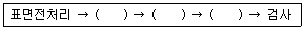

침투비파괴검사산업기사 (2018-03-04 기출문제)
1과목: 비파괴검사 개론
1. 용접 시공 시에 발생하는 균열이 아닌 것은?
- 루트균열
- 비드아래균열
- 재열균열
- 크레이터균열
(정답률: 67%)

2. 전하(q)가 있을 때 이 전하로부터 거리가 r만큼 떨어진 곳에서 같은 크기의 전하에 작용하는 힘(F, 자장의 세기)을 나타낸 관계식은? (단, k는 비례상수이다.)
- F = k(q/r)2
- F = k · q(1/r)2
- F = k(r/q)2
- F = k · r(1/q)2
(정답률: 71%)
3. 내부결함 검출에 적절한 최적의 비파괴시험에 대하여 설명한 것 중 옳은 것은?
- 용접부 내부 블로홀의 검출에는 와전류탐상시험이 최적이다.
- 강판 표면과 평행한 면상의 내부결함을 검출하는데는 자분탐상시험이 최적이다.
- 구(球)형의 내부결함이 많은 주조품을 조사하는데는 초음파탐상시험이 최적이다.
- 맞대기용접부나 주조품의 내부에는 여러 형상의 결함이 혼재해 있기 때문에 방사선투과시험과 초음파탐상시험을 병용하는 것이 좋다.
(정답률: 78%)
4. 반도체 스트레인 게이지(Strain gauge)에 대한 설명으로 틀린 것은?
- 게이지율이 높다
- 소형이고 고저항이다.
- 높은 피로수명을 갖고 있다.
- 온도특성이 저항선에 비하여 작다.
(정답률: 74%)
5. 와전류탐상시험과 비교할 때 침투탐상시험시 신뢰성이 떨어지는 것은?
- 결함의 길이 측정
- 결함의 종류 판별
- 선형결함의 형상 파악
- 선형결함의 깊이 측정
(정답률: 84%)
6. Al 또는 그 합금의 성질에 관한 설명으로 틀린 것은?
- 은백색의 가볍고 전연성이 있는 금속이다.
- 비중은 약 2.7이며, 용융온도는 약 660°C이다.
- 내식성이 좋고 전기 및 열의 전도성이 좋은 금속이다.
- 물과 대기 중에서 내식성이 나쁘고 염산, 황산, 알칼리 등에는 잘 견딘다.
(정답률: 86%)
7. 금속의 격자결함 중 면결함에 해당되는 것은?
- 적층결함
- 주조결함
- 원자공공
- 격자간 원자
(정답률: 73%)
8. 수소저장 합금의 금속간 화합물이 갖추어야 할 조건으로 옳은 것은?
- 평형 수소압 차이가 클 것
- 수소 저장시에는 생성열이 클 것
- 수소의 흡수 방출 속도가 느릴 것
- 활성화가 쉽고, 수소 저장 용량이 클 것
(정답률: 87%)
9. 다음 중 과공석강의 탄소함유량은 약 몇 % 인가?
- 0.025% 이상 ~ 0.80% 이하
- 0.80% 이상 ~ 2.0% 이하
- 2.0% 이상 ~ 4.30% 이하
- 4.30% 이상 ~ 6.67% 이하
(정답률: 74%)
10. 금속이 일반적으로 갖는 특성으로 틀린 것은?
- 전성과 연성이 나쁘다.
- 고유의 광택을 가진다.
- 전기 및 열의 양도체이다.
- 고체상태에서 결정구조를 갖는다.
(정답률: 87%)
11. 백주철을 열처리로에 넣어 가열해서 탈탄 또는 흑연화 방법으로 제조된 것으로 강도, 인성, 내식성 등이 우수하여 고강도 부품, 유니버설 조인트 등으로 사용되는 주철은?
- 회주철
- 가단주철
- 냉경주철
- 구상흑연주철
(정답률: 58%)
12. 비중이 약 4.51, 강도가 크고, 항공기, 로켓 재료로 널리 사용되며, 용융점이 강(Steel)보다 높은 금속은?
- W
- Co
- Ti
- Sn
(정답률: 83%)
13. Mn 함량을 12% 정도 함유한 것으로 오스테나이트 조직이며, 인성이 높고 내마멸성도 높아 분쇄기나 롤 등에 사용되는 강은?
- 듀콜강
- 고속도강
- 마레이징강
- 해드필드강
(정답률: 75%)
14. 소결금속 자석으로 MK강이라고도 불리는 알니코(alnico) 자석강의 주요 성분을 올바르게 나타낸 것은?
- Sn, Cr, W
- Mo, S, V
- Ni, Al, Co
- Mn, Au, Sb
(정답률: 86%)
15. 고온을 얻을 수 있고, 온도조절이 용이하며 합금원소를 정확히 첨가할 수 있어 특수강의 제조에 사용되는 용해로는?
- 평로
- 고로
- 용선로
- 전기로
(정답률: 72%)
16. 교류 아크 용접기 AW - 300에서 정격 2차 전류 값은 얼마인가?
- 200A
- 300A
- 400A
- 500A
(정답률: 79%)
17. 용착법 중 용접 이음부가 짧은 경우나, 변형과 잔류응력이 크게 문제되지 않을 때 이용되며 수축과 잔류응력이 용접의 시작부분보다 끝부분이 더 큰 용착법은?
- 대칭법
- 후퇴법
- 전진법
- 비석법
(정답률: 72%)
18. 피복 아크 용접에서 무부하전압 80V, 아크전압 30V, 아크전류 200A라 하고, 이때의 내부손실을 4kW라 하면 용접기의 효율은 몇 %인가?
- 60
- 70
- 80
- 90
(정답률: 59%)
19. 일반적인 논 가스 아크 용접(non gas arc welding)의 특징으로 틀린 것은?
- 용접장치가 간단하며 운반이 편리하다.
- 바람이 있는 옥외에서는 작업이 불가능하다.
- 용접 비드가 아름답고 슬래그의 박리성이 좋다.
- 보호가스의 발생이 많아 용접선이 잘 보이지 않는다.
(정답률: 71%)
20. 일반적인 용접작업에서 비틀림 변형을 줄이기 위한 시공 상의 주의사항으로 틀린 것은?
- 지그를 활용할 것
- 이음부의 맞춤을 정확히 할 것
- 구속이 큰 부분에 집중 용접을 할 것
- 표면 덧붙이를 필요 이상 주지 말 것
(정답률: 79%)
2과목: 침투탐상검사 원리 및 규격
21. 침투탐상검사에서 안전관리 사항으로 적합하지 않은 것은?
- 휘발성 증기를 흡입하면 급성 중독에 걸릴 수 있다.
- 탐상제가 피부에 묻으면 염증이 생길 수 있다.
- 자외선 의 강도는 3000㎼/cm2 이하로 하는 것이 바람직하다.
- 자외선을 피부에 장기간 조사받으면 피부의 노화를 촉진시킨다.
(정답률: 89%)
22. 세척처리 및 현상법의 차이에 따른 건조처리 여부와 적용시기가 옳은 것은?
- 건식현상법 : 수세법의 경우 세척처리 후 건조시킨다.
- 습식현상법 : 수세법의 경우 세척처리 후 건조시킨다.
- 무현상법 : 용제세척의 경우 세척처리 후 건조시킨다.
- 속건식 현상법 : 용제세척의 경우 세척처리 후 건조시킨다.
(정답률: 69%)
23. 다음은 자외선 등에 대한 설명이다. 틀린 것은?
- 파장의 범위는 320~400㎚이다.
- 형광침투탐상시 사용하는 자외선 조사장치는 블랙라이트라고도 불린다.
- 자외선 조사장치의 램프수명은 사용조건에 따라 차이가 있다.
- 수은등을 사용할 경우 즉시 점등되어 사용가능하다.
(정답률: 85%)
24. 침투탐상검사의 장·단점에 대한 설명으로 틀린 것은?
- 국부적 탐상이 가능하다.
- 원리 및 적용이 간단하다.
- 미세한 균열의 탐상이 불가능하다.
- 주변 환경, 온도에 민감하여 제약을 받는다.
(정답률: 86%)
25. 침투탐상검사의 전처리 방법 중 기계적 방법 분류에 속하는 것은?
- 와이어 브러싱법
- 염기성 세척
- 증기탈지
- 용제 분무
(정답률: 81%)
26. 두꺼운 판재의 T이음이나 모서리 이음에서 판면에 평행하게 발생하는 결함인 것은?
- 융합불량
- 슬래그 개재
- 라맬라 티어
- 파이프
(정답률: 59%)
27. 복잡한 형상으로 된 소형 제품의 제작단계에서 침투탐상시험을 할 때 잉여 후유화성 침투액을 제거하는 방법으로 적절한 것은?
- 고온의 물에 침적하여 제거한다.
- 흐르는 물에 철솔로 문질러 제거한다.
- 적당한 수압으로 물을 뿌려 제거한다.
- 일반 용제를 사용하여 헝겊으로 제거한다.
(정답률: 83%)
28. 침투탐상시험에서 모세관 속 액체의 상승하는 높이는?
- 액체의 밀도에 비례한다.
- 중력가속도에 비례한다.
- 모세관 반지름에 비례한다.
- 액체의 표면장력에 비례한다.
(정답률: 66%)
29. 휘발성이 높은 유기용제에 백색 미세분말의 현상제를 분산시켜 현탁액을 사용하는 현상법은?
- 건식 현상법
- 수용성 현상법
- 수현탁성 현상법
- 속건식 현상법
(정답률: 70%)
30. 침투력 자체에는 영향이 없으나, 침투액이 결함 속으로 침투하는 속도에 영향을 주는 인자는 무엇인가?
- 표면장력
- 점성
- 적심성
- 흡수성
(정답률: 64%)
31. 침투탐상 시험방법 및 침투지시모양이의 분류(KS B 0816)에 따라 표면을 전처리할 때 추천방법이 아닌 것은?
- 증기세척
- 도막 박리제
- 샌드 블라스트
- 용제에 의한 세척
(정답률: 76%)
32. 보일러 및 압력용기에 대한 표준침투탐상검사(ASME Sec.V Art.24 SE-165)에서 부품을 건조할 때 건조기 오븐은 몇 ℃를 초과해서는 안 되는가?
- 40℃
- 58℃
- 71℃
- 80℃
(정답률: 55%)
33. 보일러 및 압력용기에 대한 침투탐상검사(ASME Sec.V, Art.6)에 의해 친수성 제거제를 스프레이법으로 적용할 경우 제한되는 최대 농도 값은?
- 3%
- 5%
- 10%
- 20%
(정답률: 48%)
34. 침투탐상 시험방법 및 침투지시모양의 분류(KS B 0816)에서 15℃~50℃의 범위일 때 주조품의 갈라짐에 대한 표준 침투시간은?
- 5분
- 10분
- 15분
- 25분
(정답률: 79%)
35. 보일러 및 압력용기에 대한 침투탐상검사(ASME Sec.V, Art.6)에 따라 친수성 제거제를 검사품에 적용할 경우 최대 허용가능한 시간은?
- 1분
- 2분
- 3분
- 5분
(정답률: 58%)
36. 침투탐상 시험방법 및 침투지시모양의 분류(KS B 0816)에서 침투탐상검사 시 침투시간이 다른 형태의 결함은?
- 쇳물경계
- 랩(Lap)
- 빈 틈새
- 융합 불량
(정답률: 78%)
37. 침투탐상 시험방법 및 침투지시모양의 분류(KS B 0816)에서 [전처리-침투처리-제거처리-관찰-후처리]의 순서로 하는 시험방법은?
- FC-N
- FB-N
- FD-N
- DFB-N
(정답률: 76%)
38. 보일러 및 압력용기에 대한 침투탐상검사(ASME Sec.V, Art.6)에 따라 침투탐상검사를 수행할 때 사용하는 침투용액의 오염물질 함유량에 대한 증명서를 보유하지 않아도 되는 재질은?
- 알루미늄 합금
- 니켈 합금
- 듀플렉스 스테인리스 강
- 티타늄
(정답률: 58%)
39. 침투탐상 시험방법 및 침투지시모양의 분류(KS B 0816)에 따라 스프레이 노즐을 이용하여 수세척을 할 때 적절한 수온의 범위는?
- 5~30℃
- 10~40℃
- 15~52℃
- 20~55℃
(정답률: 66%)
40. 보일러 및 압력용기에 대한 침투탐상검사(ASME Sec.V, Art.6)에 따라 침투탐상시험을 할 때, 유황의 함유량이 최대 1%로 제한되는 재질은?
- 티타늄
- 오스테나이트 스테인리스강
- 듀플렉스 스테인리스강
- 니켈 합금강
(정답률: 72%)
3과목: 침투탐상검사 시험
41. 침투탐상 검사에서 현상제가 갖추어야할 성능에 해당되지않는 것은?
- 흡출작용
- 분해작용
- 분산작용
- 배경증대
(정답률: 73%)
42. 다음 중 침투탐상 검사과정에서 일반적으로 처리시간을 가장 짧게 해야 하는 과정은?
- 전처리
- 유화처리
- 현상처리
- 침투처리
(정답률: 78%)
43. 휘발성이 높은 유기용제를 주로 사용하는 탐상 재료는?
- 후유화성 침투액
- 세척액
- 습식 현상제
- 건식 현상제
(정답률: 59%)
44. 수세성 침투액을 사용하여 검사하는 과정을 다음의 5단계로 수행할 때 ( )안에 순서로 옳은 것은?

- 현상액 적용 → 액체 침투액 수세 → 액체 침투액 적용
- 액체 침투액 수세 → 액체 침투액 적용 → 현상액 적용
- 액체 침투액 적용 → 현상액 적용 → 액체 침투액 수세
- 액체 침투액 적용 → 액체 침투액 수세 → 현상액 적용
(정답률: 83%)
45. 균열이 있는 비교용 대비시험편의 사용 용도에 대한 설명으로 틀린 것은?
- 사용 중인 침투제의 상대적인 감도를 비교하기 위하여
- 과잉침투제를 제거할 경우에 필요한 세척성을 알기 위하여
- 필요시마다 나타낼 수 있는 균열의 표준크기를 설정하기 위하여
- 오염에 따른 형광침투제의 성능이 저하되었는가를 알아보기 위하여
(정답률: 68%)
46. 다음 중 침투탐상검사가 어려운 물질은?
- 주물
- 유리
- 철과 비철재료의 혼합물
- 다공성 재질로 만든 물질
(정답률: 83%)
47. 니켈합금강의 경우 침투탐상제 중에 함유된 어떤 물질이 사용 중에 응력부식 균열을 일으킬 수 있는데, 이 물질은 무엇인가?
- 질소
- 황
- 탄소
- 크롬
(정답률: 86%)
48. 침투탐상검사 시 부품에 대한 전처리법으로 증기세척법을 사용하는 주된 이유로 옳은 것은?
- 표면의 모든 오염물질을 완전히 제거시킬 수 있기 때문이다.
- 용제 증기는 대부분의 석유화학 오염물질을 제거시킬 수 있기 때문이다.
- 용제 증기는 대부분의 고형의 오염물을 제거시킬 수 있기 때문이다.
- 부품의 크기에 관계없이 채택할 수 있기 때문이다.
(정답률: 76%)
49. 다음 중 침투탐상검사에 사용되는 대비시험편의 사용 목적으로 가장 부적절한 것은?
- 구입한 탐상제의 성능 비교
- 사용중인 탐상제의 성능 비교
- 전처리 방법의 적정성 비교
- 조작 방법의 적정성 비교
(정답률: 65%)
50. 침투탐상시 의사지시의 발생 원인을 설명한 것으로 가장 거리가 먼 것은?
- 제거(세척)처리가 적절하게 실시되지 않은 경우
- 내부 결함이 너무 많이 내포된 경우
- 검사개시 때의 표면상태가 침투탐상검사에 적합하지 않은 경우
- 검사체의 형상이 복잡하여 선정된 검사법이 그와 같은 형상의 것을 검사하기에 적합하지 않은 경우
(정답률: 80%)
51. 시험체를 높은 온도로 가역했을 경우 침투액에 미치는 가장 큰 영향은?
- 침투액은 높은 접착성을 갖는다.
- 침투액이 빛깔을 잃는다.
- 침투액은 불연속부에 들어가지 않는다.
- 침투액이 증발된다.
(정답률: 88%)
52. 결함의 깊이가 가장 얕을 때 적합한 침투탐상법은?
- 후유화성형광침투액 - 습식현상법
- 수세성형광침투액 - 습식현상법
- 후유화성형광침투액 - 건식현상법
- 용제제거성형광침투액 - 습식현상법
(정답률: 55%)
53. 다음 중 가장 감도가 우수한 염색 침투제의 색깔은?
- 흰색
- 회색
- 검은색
- 검붉은색
(정답률: 86%)
54. 침투탐상시험의 방법에 해당하지 않는 것은?
- 공기효과를 이용한 침투탐상시험
- 하전입자의 흡착성을 이용한 침투탐상시험
- 휘발성의 침투액을 이용한 침투탐상시험
- 기체 방사성동위원소를 이용한 침투탐상시험
(정답률: 65%)
55. 미세한 균열 탐지에 가장 효과적인 검사방법은?
- 수세성 염색 침투탐상검사
- 후유화성 형광 침투탐상검사
- 용제제거성 염색 침투탐상검사
- 용제제거성 형광 침투탐상검사
(정답률: 81%)
56. 불연속 종류의 설명으로 틀린 것은?
- 원형으로 나타나는 침투지시모양은 보통 기공에 의해 생긴다.
- 연속적인 선으로 나타나는 지시는 단조 겹침, 파열 등 에 의해 발생한다.
- 간헐적인 선으로 나타나는 침투지시모양은 시험체의 연마작업에 의해 발생한다.
- 확산 및 희미한 지시모양은 시험체의 다공성, 주조품은 거친 결정 등에 의해 발생한다.
(정답률: 64%)
57. 침투탐상검사 시 관찰에 관한 사항 중 틀린 것은?
- 형광 침투 탐상면의 자외선강도는 800㎼/cm2 이상이 요구된다.
- 염색 침투 탐상면의 밝기는 500lx 이상을 요구한다.
- 결함지시모양은 시간 흐름에 따라 변화하므로 현상시간 경과 후 가능한 한 빨리 관찰 할 필요가 있다.
- 판별이 곤란한 지시들은 솔로 현상제 등을 제거하고, 침투처리 후 재검사 한다.
(정답률: 62%)
58. 침투탐상검사에서 침투액을 물로 제거할 수 있게 하는 물질은 무억인가?
- 침투제
- 현상제
- 세척제
- 유화제
(정답률: 84%)
59. 침투액의 적용 방법 중 작은 검사품의 대량 검사에 가장 적합한 침투처리 방법은?
- 침지법(dipping)
- 스프레이(spraying)
- 붓칠하기(brushing)
- 배액(draining)
(정답률: 88%)
60. 침투제 중 야외 제작 현장에서 용접부에 가장 많이 적용되는 것은?
- 후유화성 형광침투제
- 후유화성 염색침투제
- 용제제거성 염색침투제
- 용제제거성 형광침투제
(정답률: 79%)